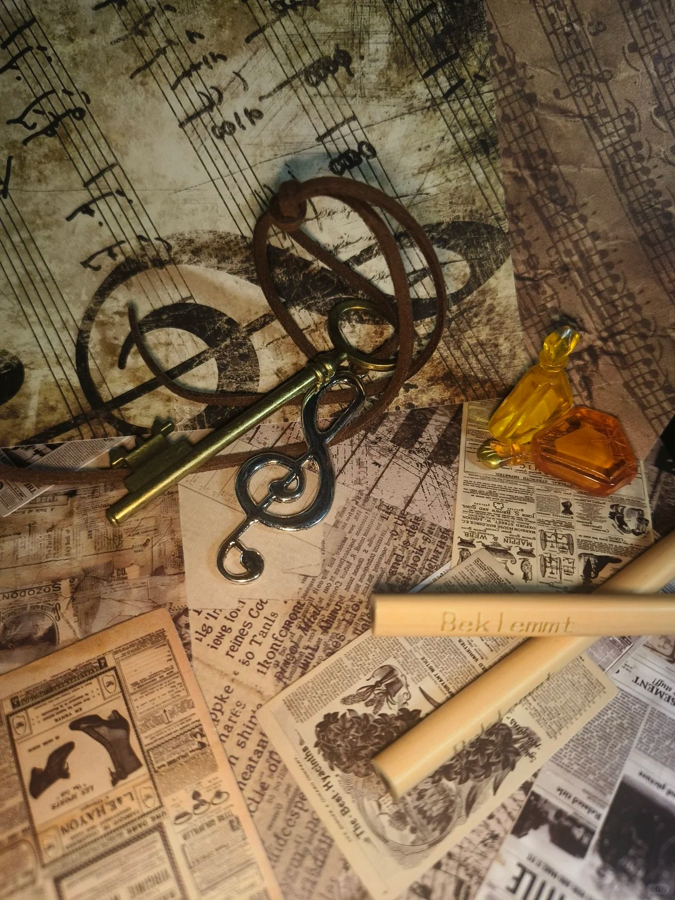
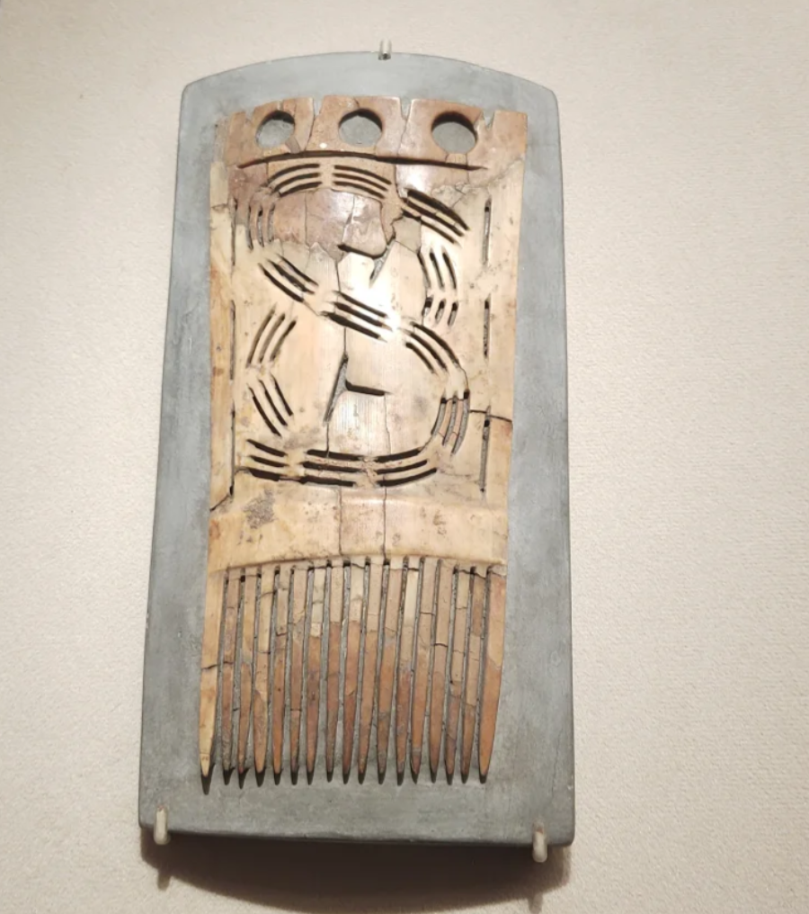
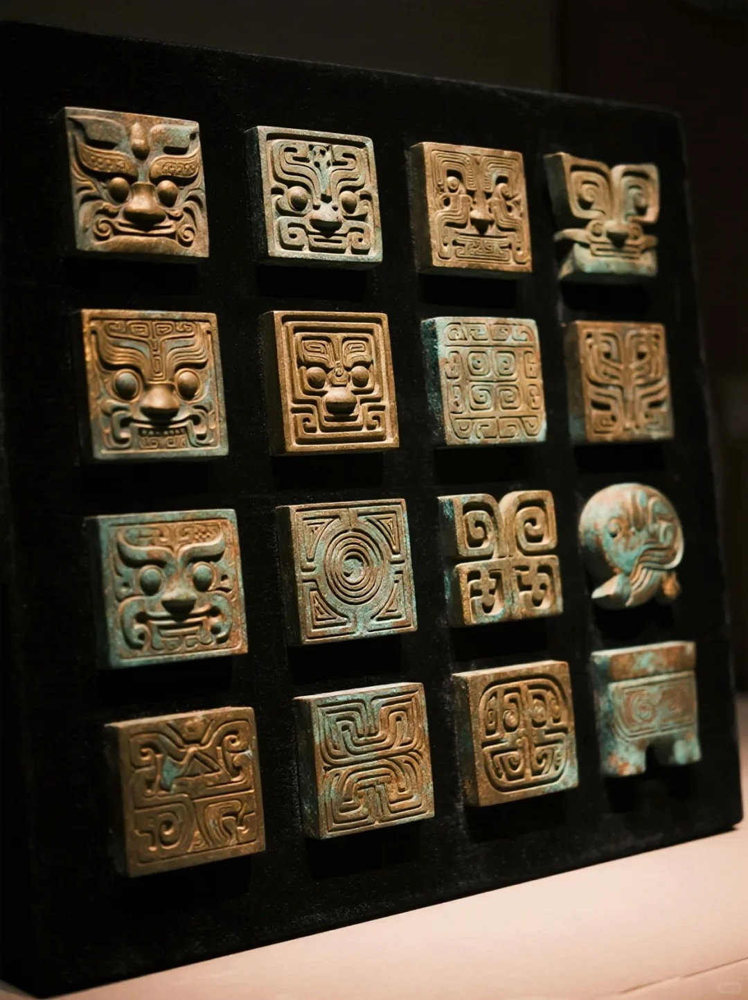
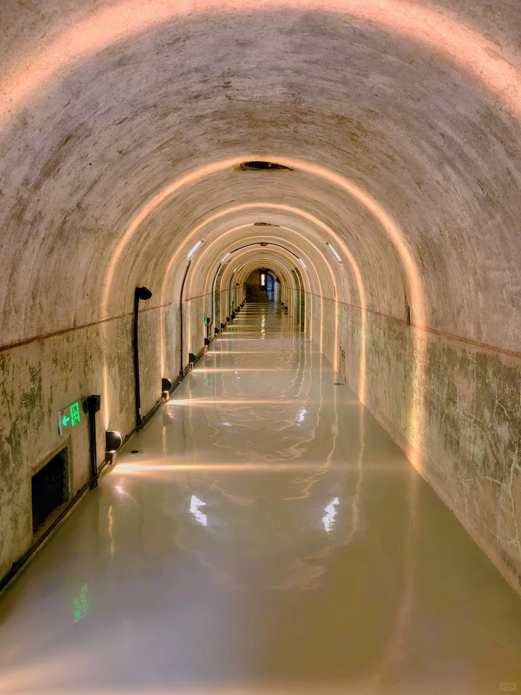
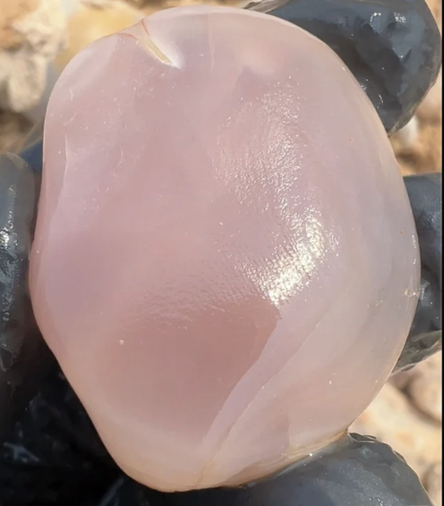
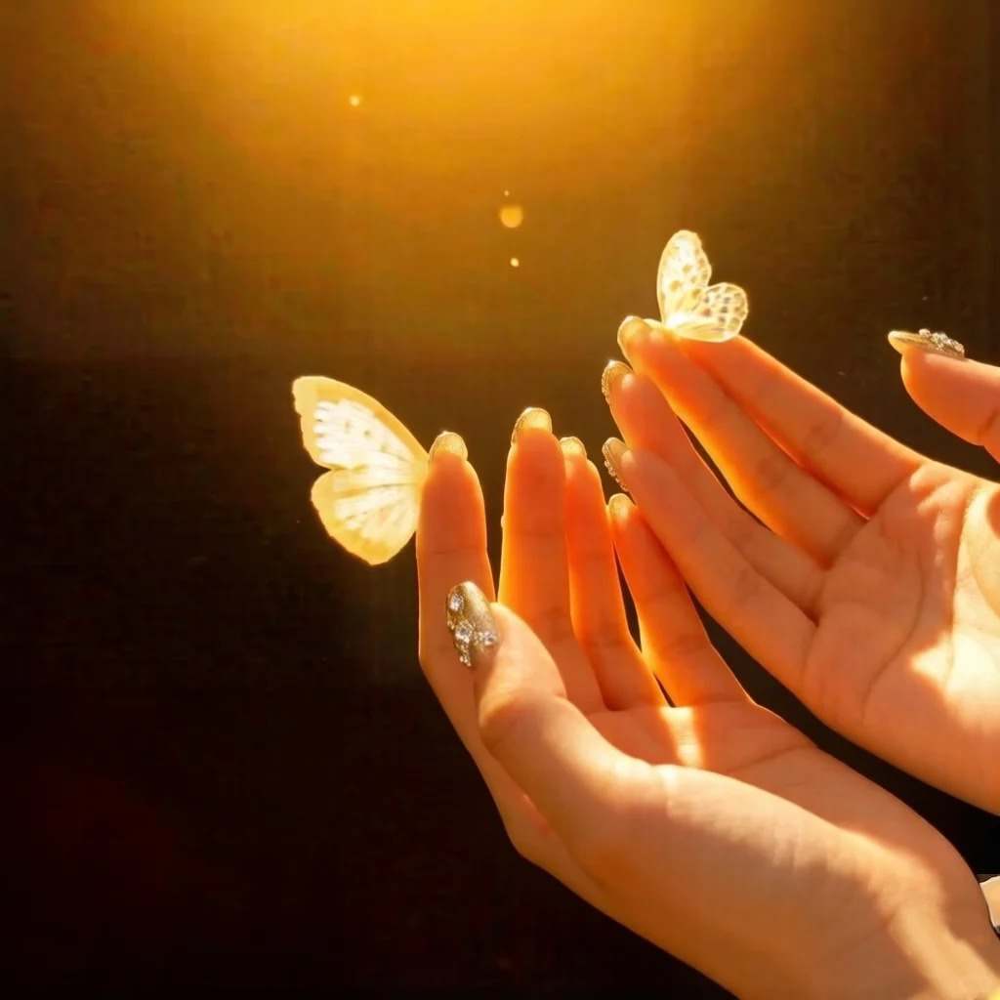
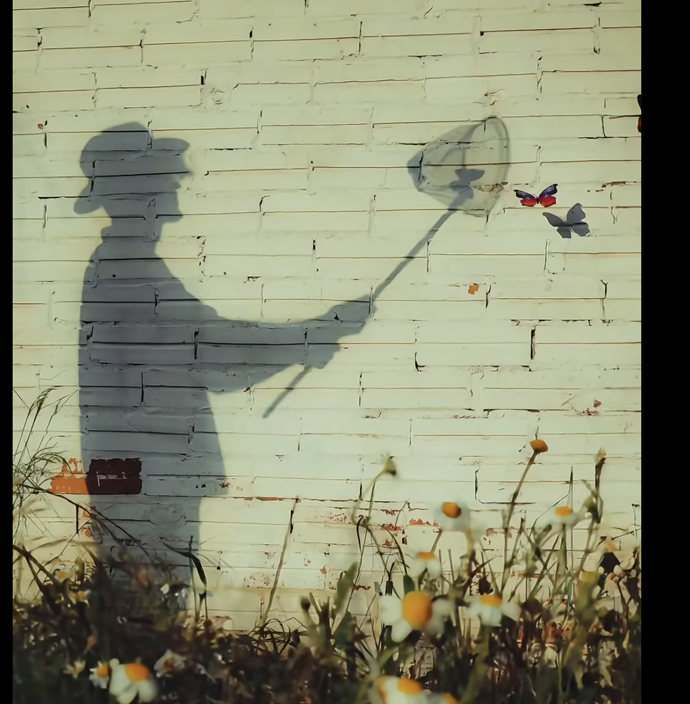

Instead of asking will we augment ourselves, I wanted to sit with how augmentation becomes ordinary — how the extraordinary fades into domestic life, rituals, furniture, grief. The archaeological prompt flipped the angle: not "build a gadget for 2150," but "imagine a thing that will one day be dug up, puzzled over, and labeled."
I placed two tensions against each other. The horizontal axis asks who owns cognition — is our augmented mind a centralized cloud service, or a distributed, personal substrate? The vertical axis asks what role it plays in daily life — is it corporate / institutional infrastructure, or is it intimate, ritual, domestic?
Placed on Voros's futures cone, the quadrant I chose is possible (no physics broken), weakly plausible (requires mature brain–machine interfaces, a cultural shift away from corporate stewardship of identity, and stable long-term data media), and not probable in this specific form — though the underlying vector, externalising memory and identity, already is. I'm intentionally reaching for a preferable corner: a future where cognitive tech survives its corporate infancy and becomes slow, tactile, and intergenerational.
By the late 2080s, neural co-processors had become as mundane as contact lenses. They began as productivity tools — corporate platforms you logged into — but three slow shifts changed them. First, a cohort of open cognitive protocols broke the cloud monopoly in the 2090s. Second, a generation that grew up with externalised memory refused to rent their inner lives from strangers. Third, grief. When the first augmented parents began to die, their children discovered that a person's habits, inflections, and fragments of thought could be kept — if you had somewhere intimate and permanent enough to put them.
The resulting practice, by 2140, is called quiet inheritance. It is not resurrection. It is not a chatbot of the dead. It is a curated residue — a few hundred carefully chosen memories, vocal cadences, sensory textures, sometimes a single dreaming loop — pressed into a small object and passed down. Children inherit a grandparent's knack for bread, or the smell of their childhood kitchen, or the feeling of being listened to. Most households own two or three. They live on shelves next to photographs, on bedside tables, sometimes tucked inside pockets on long trips.
Ownership is legal but informal — more like a locket than an account. The vessels are engineered to decay: their substrate loses coherence after roughly four generations, by design. A culture that once panicked about data permanence has made peace with forgetting on a human clock.
I am an archaeologist two centuries after this object's making. I am looking at a palm-sized vessel on a table. It is warm. It remembers someone's mother.
I assembled reference directions before I opened Blender. I wasn't searching for "sci-fi." I was hunting for objects whose job is to hold something precious: reliquaries, pocket watches, Japanese netsuke, sea-worn stones, Brâncuși's marble eggs, Neolithic chalk drums, the tactile controls of a Leica M3, and certain mineral growths (chalcedony, desert rose, geodes). I wanted a language of weight, warmth, wear.

Reliquary
Bone / Ivory
Aged brass
Deep well
Chalcedony
Soft lamplight
ShadowReference touchstones (for you to search and drop into your own doc): Brâncuși, The Beginning of the World (1920); Tanya Aguiñiga ceremonial objects; the BBC Radiophonic Workshop "Delia" dials; Noguchi paper lamps; Studio Olafur Eliasson's Little Sun; Gwyneth Leech's reliquary paintings; images of Roman gold-glass medallions; macro photography of polished agate; Tadao Ando interior light. For HDRi I plan to use a warm indoor environment (e.g. Poly Haven's studio_small_09 or lebombo).
A palm-sized vessel, roughly 9 cm tall. A translucent chalcedony-like substrate holds the encoded memories. A brass-and-bone collar contains the legacy neural port and a thumbprint resonator. The crown is a soft-touch cap — you press it to "listen." A foot of darkened wood gives it weight; the underside is etched with a name, a date, and a memory glyph — a standardized pictogram noting what kind of residue is held (cooking, a song, a laugh, a particular silence).
The design brief I gave myself: it must feel older than it is. A person in 2147 should handle this object and feel its lineage without thinking. That pushed me toward a vocabulary of reliquary + tool + seed. Nothing flat-screen. No glowing blue.
A Principled BSDF with Transmission 1.0, Roughness 0.15, IOR 1.52. I drove the base color with a Musgrave/Noise texture mixed over amber-to-deep-bronze color ramp so internal striations read as layered memory. A thin layer of Volume Absorption (color: warm amber, density 2.5) gives the interior that lit-from-within feel without needing to fake it with an emission.
Principled BSDF, base color #b5944a, Metallic 1.0, Roughness driven by a Pointiness geometry node → ColorRamp so edges stay polished while recesses darken with patina. A subtle dirt overlay (AO → Invert → multiply) into base color gives it age.
Image texture of scorched oak, UV-unwrapped with seams on the underside. Roughness map inverted from the color map's luminance. Light Normal map for grain. Soft fingerprint smudge baked into the roughness only — you can feel where the object has been held.
Shared material with the foot but with a darker tint in the recessed geometry, plus a tiny emission of #3a2a12 at strength 0.08 so the glyph glows faintly if you look closely. A clue rather than a light source.
I wanted museum-table-at-dusk, not sci-fi showroom. The scene uses a warm indoor HDRi at 0.3 strength as the ambient base, plus three lights: a key area light at 45° above camera-left (5500 K, 40 W equivalent, large softbox 60×90 cm for gentle falloff); a cold rim light camera-right (6500 K, 8 W) to separate the vessel from the background; and a tiny warm point light inside the body at 2 W to give the chalcedony its candle-from-within glow.
Camera: 85 mm, f/2.8, focus on the thumbprint dimple. Slight tilt — not dead-on. The background is a soft dark-plum velvet plane with depth-of-field blur, evoking a display vitrine. Render in Cycles, 1024 samples, with Caustics on because the amber refraction matters. Filmic color transform, high contrast.
I kept asking the object: if you were dug up, what would you be mistaken for? A lamp? A urn? A seed? The answer I liked best was: something whose purpose the archaeologist has to feel, not read.
The hardest design choice was resisting the urge to make the vessel glow. A glowing object announces itself; a quiet object lets you approach it. I think that's the real argument of the project: the augmented future I want is one where the tech goes quiet. No dashboards on your face, no blue light on your wrist — just warm things on shelves that outlive us a little.
Next iteration I'd like to try: a scene rather than a still life — two vessels on a kitchen counter at morning light, one in use, one forgotten. The banality is the argument.